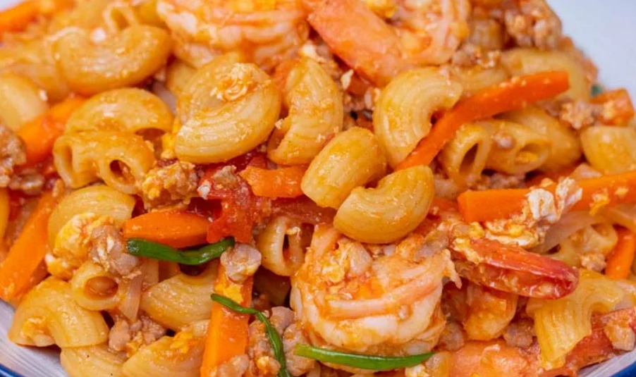

ผัดมะกะโรนีกุ้งหมูสับ

วัตถุดิบ
- เส้นมักกะโรนีดิบ 150 กรัม
- เกลือป่น ½ ช้อนโต๊ะ (ต้มเส้น)
- น้ำมันพืช 1 ช้อนโต๊ะ (ต้มเส้น)
- น้ำมันพืช 1 ช้อนโต๊ะ
- กระเทียมสับ 1 ช้อนโต๊ะ
- หอมใหญ่(หั่นเสี้ยว) 100 กรัม
- แคร์รอต(หั่นแท่ง) 100 กรัม
- มะเขือเทศท้อ (หั่นเสี้ยว) 2 ลูก
- ต้นหอม(หั่นท่อน) 2 ต้น
- เนยสด 2 ช้อนโต๊ะ
- น้ำตาลทราย ½ ช้อนโต๊ะ
- พริกไทยป่น 1 ช้อนชา
- ซีอิ๊วขาว 1 ช้อนโต๊ะ
- ซอสมะเขือเทศ 6 ช้อนโต๊ะ
- กุ้งขาว 200 กรัม
- หมูสับ 200 กรัม
- ไข่ไก่ 2 ฟอง
ขั้นตอนการทำ
-
ตั้งน้ำให้เดือดด้วยไฟแรง ใส่เกลือป่นและน้ำมันพืชลงไป
(ใส่เกลือและน้ำมันเพื่อไม่ให้เส้นติดเป็นเพิ่มรสชาติให้เส้น)
-
ใส่เส้นลงไปต้ม ระหว่างต้มให้คอยคนเส้น เพื่อไม่ให้เส้นติดก้นหม้อ
ต้มประมาณ 6-7 นาที
- ตักเส้นขึ้นและนำไปล้างน้ำเย็น เพื่อหยุดความร้อน
-
ตั้งกระทะไฟกลาง ใส่น้ำมันตามด้วยกระเทียม ผัดให้หอม จากนั้นใส่หมูสับ
และกุ้งลงไป ผัดให้สุก
- ใส่เนยสด หอมใหญ่ แครอทและมะเขือเทศลงไป ผัดให้ผักเริ่มสุก
-
ใส่ไข่ลงไปผัดให้ไข่เริ่มสุก จากนั้นใส่เส้นมักกะโรนี น้ำตาลทราย ซีอิ๊วขาว
พริกไทยป่น และซอสมะเขือเทศ ผัดให้เข้ากัน
- ใส่ต้นหอม ผัดให้เข้ากัน ปิดไฟ เทใส่จาน